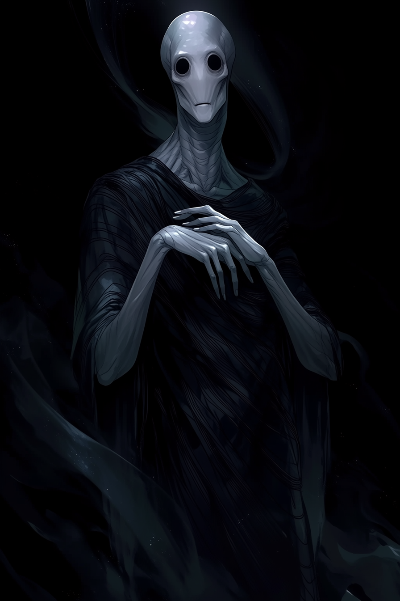
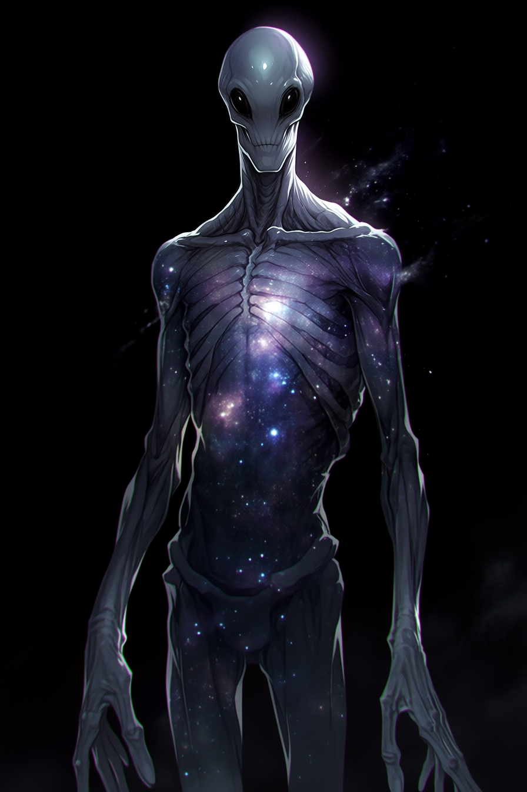

Civilian
SuperheroDarkstar
At a Glance
| Field | Value |
|---|---|
| Full Name | Darkstar (designation — given name untranslated/unknown) |
| Hero Name | N/A |
| A.E.G.I.S. File | On file — Watch Status, non-hostile to date |
| Species | Umbraeon |
| Age | Unknown — near-immortal by human timescales |
| Affiliation | None formal. Self-directed. Fringe of Umbraeon civilization. |
| Status | Unknown — ship publicly destroyed; survival unconfirmed. Believed wounded. |
| Origin Category | Category Va — Cosmic/Alien Origin (Full Non-Human) |
Powers
- Dark matter manipulation — primary capability; precise gravitational and cosmic force control
- Advanced genetic engineering — has introduced experimental biological agents and modified individuals' genetics deliberately
- Passive observation — operates through intermediaries; avoids direct confrontation
The Umbraeon
A civilization born around a dying star emitting unstable dark radiation. The Umbraeon mastered gravitational forces and cosmic energy long before humanity discovered fire. Over millennia, they abandoned war and scarcity, replacing both with experimentation and cultural study.
Detached, hyper-rational, and nearly immortal, they view younger species as developmental case studies rather than equals. Where humans see morality, the Umbraeon see data.
Darkstar represents a radical fringe of his kind — one of very few who believe in intervention rather than pure observation.
Background
First documented contact with Halden City: 2012. Operating through intermediaries. His initial interventions were subtle: empowering unstable individuals, introducing experimental biological agents, engineering scenarios designed to stress-test heroic systems.
He believes suffering accelerates evolution. He considers himself a catalyst to greatness. He is calm, analytical, and patient in a way that reads as genuinely alien — not performed patience, but the actual temporal perspective of something that has watched civilizations rise and fall.
His defected son Sterling Slate / Cosmic Knight is active on the new Alliance team. Darkstar's interest in this team is personal now in a way it was not before.
Current Status — Ship Destroyed, Survival Unknown
Darkstar's ship was publicly destroyed in the incident preceding Arc 1 (the Renegade Force / Carter Williams attack that the Alliance was dispatched to respond to). Whether Darkstar survived is unknown — the attack was not designed to kill him, but the outcome is unconfirmed.
Raze does not know if his father is alive. Raze was off the ship hunting Sterling when the ship was attacked. He was not present for the destruction. This has reframed his original mission: retrieval of Sterling is now a revenge plot operating under the assumption that Darkstar is dead. Raze has license to kill. See characters/npcs/raze.md for full profile.
Working assumption (GM eyes only): Darkstar is wounded but alive. He has retreated to recover and is working on a weapon designed to permanently end the Paragon and Renegade Force cycle — a deterrent capable of destroying both cosmic principles simultaneously. His diagnosis of the problem is not wrong. His solution will be.
The Deterrent Weapon — Seeding Notes
Darkstar is building something. Evidence of this work should surface gradually across Arc 1 before the weapon itself becomes legible.
Suggested breadcrumbs:
- One or two of the three missing Glass District researchers were working on energy containment or force-binding theory. Their notes reference an outside buyer or unnamed contractor — nothing that reads as alien, just work that shouldn't exist yet pointing somewhere it shouldn't point.
- Quantum notices an anomalous reading — something actively studying or mapping the Paragon/Renegade Force's cosmic signature. One unexplained data point. No attribution.
- Raze's movements correlate with Darkstar's last known work sites. Where Raze goes, evidence of the weapon's development follows — the players learn about the weapon partly by learning about Raze's search for his father.
The weapon is seeded in Arc 1. It does not surface as a central threat until later arcs.
Engineered Children
Darkstar creates his children by splicing his Umbraeon DNA with a target species to produce the ultimate expression of that species' potential. Each child has a specific designed purpose.
| Name | Species Splice | Purpose | Status |
|---|---|---|---|
| Sterling Slate / Cosmic Knight | Human | Infiltration and targeted elimination | Defected |
| Raze | Vorrkai (from Vorr) | Assassination and field enforcement | Active — revenge plot, assumes Darkstar dead |
| Others | Unknown | Unknown | Unknown |
The Vorrkai are a tribal, space-faring warrior race. See characters/npcs/raze.md for full Vorrkai detail.
Character Profile
Darkstar is not a villain who wants to destroy. He is something more unsettling: an observer who genuinely believes the things he does to people are good for them. His frame is evolutionary. His methods are experiments. The people he empowers or harms are data points in a study he's been running for longer than most institutions have existed.
The Sterling situation complicates this. His son is a defection — a data point that refused the categorization Darkstar assigned to it. What that does to his methodology, or to him, is not yet known.
Relationships
| Person | Relationship |
|---|---|
| Sterling Slate / Cosmic Knight | His son. Engineered half-Umbraeon. Defected. Darkstar's interest in the new team runs through this. |
| Raze | Engineered child. Vorrkai/Umbraeon hybrid. Was on a retrieval mission when the ship was destroyed. Now operating independently, assumes Darkstar dead. Full profile: characters/npcs/raze.md. |
| Riley Thomas / Recluse | Aware of. Has been monitoring Riley's parasite situation with interest. Not intervening — yet. |
The Parasite Thread
Origin — The Abduction Mission (~2015–2016)
The parasite was introduced during one of the Alliance's earliest formal operations — a response to a Darkstar-linked abduction event, likely within the first year of the Alliance's founding. Riley did not know he had been exposed to anything when he left the ship. There was no injury, no obvious intervention. Whatever Darkstar introduced was introduced quietly, in the margins of a mission Riley considered concluded.
Why Riley specifically: Darkstar had been studying Halden City's enhanced individuals since 2012. The spider gene is unusual — a distributed genetic expression with documented precognitive capacity, not an accident or a lab product. The parasite was not opportunistic. It was selected.
Timeline: ~10 years elapsed between exposure and the campaign's present. The parasite is slow. This was designed.
What the Parasite Does
Targets the spider gene specifically. Designed to strip moral restraint rather than kill the host. Darkstar's hypothesis: the spider gene's precognitive function is entangled with threat-assessment, which is entangled with ethical weighting. Remove the restraint, and what remains is a faster, more efficient predator — an evolutionary step, by his frame.
Riley's physical deterioration (slower healing, stiff joints) is a side effect of the parasite's progress, not the goal.
Zara Thorne receives Riley's physical distress passively through genetic entanglement — she is getting a signal, not symptoms. The signal has been intensifying. She doesn't know about the parasite. She knows something is wrong.
Darkstar is monitoring. His posture is passive — he seeded the experiment and is observing results. He considers active intervention unnecessary. He expects the data to arrive on its own timeline.
Open Questions
- Did Darkstar survive the ship's destruction? (Working assumption: yes, wounded)
- What is the deterrent weapon's mechanism — how does it target the Paragon and Renegade Forces specifically?
- How long until the weapon is functional?
- Has Darkstar made contact with Signal, Vane, or any other active antagonist?
- What does A.E.G.I.S. know about the ship destruction — and do they know Darkstar may have survived?
- Does Darkstar know Sterling is on the team, and does that affect his weapon's design?
Last updated: March 2026 Raze file created — see characters/npcs/raze.md. Engineered children table added.